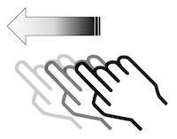

Talkback user guide
TalkBack is a built-in screen reader for Android that reads aloud the items that appear on the device screen. It is free and it vocalizes all visible elements in the page specially for blind or partially sighted, dyslexic or illiterate users. A tool like TalkBack is called either screen reader or speech synthesizer, even if a screen reader is actually a software associated with voice synthesis.
When TalkBack is on, the standard gestures behave differently. Furthermore, additional gestures let you move the focus on the screen and control the selected items. TalkBack has gestures with one, two and three fingers to select and to go through elements. We describe here the basic gestures commonly used. Note: TalkBack is considered as accessible since the JellyBean release (4.1) because you can navigate sequentially.
First of all, update TalkBack here: PlayStore Link
Common gestures #
-

Drag one finger
Explore your screen and hear audible feedback for what is being touched.
-

Double-tap anywhere on the screen
Opens or activates the item that you last touched (vocalized).
-


Swipe up or down using two fingers
Scroll within lists or pages if selected. Equivalent to a vertical swipe.
-

Swipe left or right using two fingers
Change pages and screens when possible. Equivalent to a horizontal swipe.
-

Swipe right using one finger
Move the focus to the next item.
-

Swipe left using one finger.
Move the focus to the previous item.
-


Swipe up or down using one finger
Cycle through navigation mode: “pages”, “by default (elements)”, “characters”, “words”, “lines” et “paragraphs”.
These images are licensed under the Creative Commons Share Alike 2.0 license. Photo credit: openexhibits
For more information about TalkBack and a detailed description of its features, please read the Google’s official documentation on TalkBack.